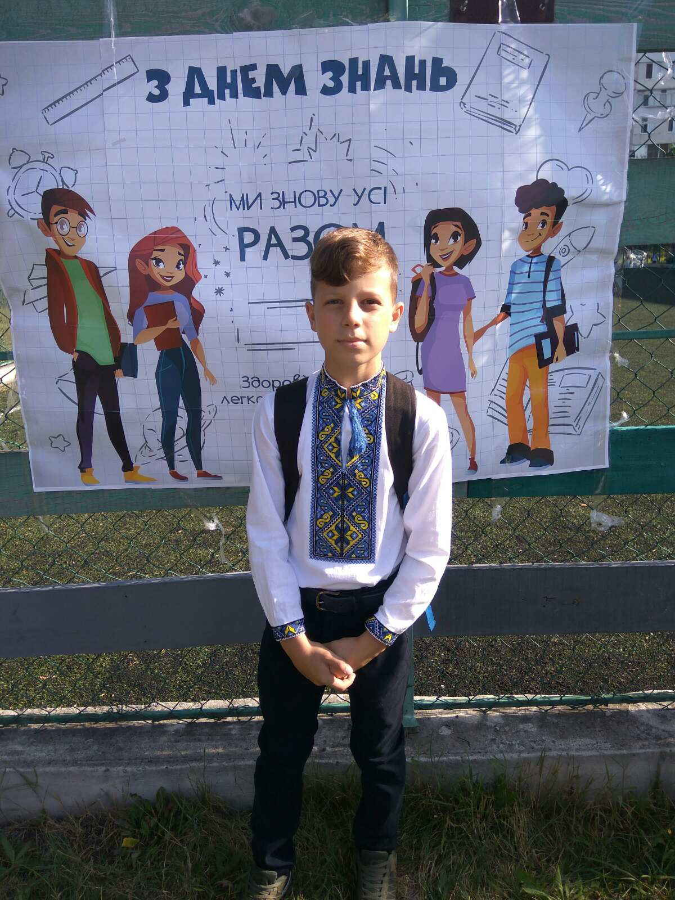
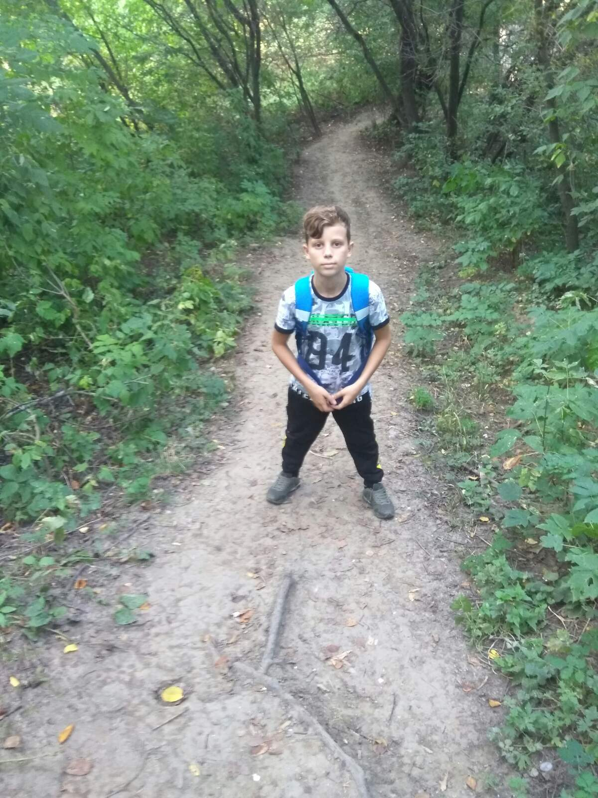
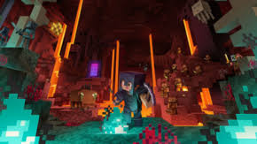

Мене звати Артем, учень 4-І класу. Мені 10 років. Живу в Україні. Я навчаюся на відмінно. Я відвідую багато гуртків, граю настільні та комп'ютерні ігри, читаю цікаві книги про пригоди, подорожі, фантастику. Я дуже люблю прогулянки на повітрі, люблю гуляти з друзями, кататися на велосипеді і трюковому самокаті.
Я дуже люблю майнкрафт, тому написав про це блог.Я часто граю в майнкрафт з моїм братом на телефоні, разом ми досліджуємо світ. Я ще ніколи не проходив майнкрафт, але недавно я установив його на комп'ютері і дуже хочу його пройти.